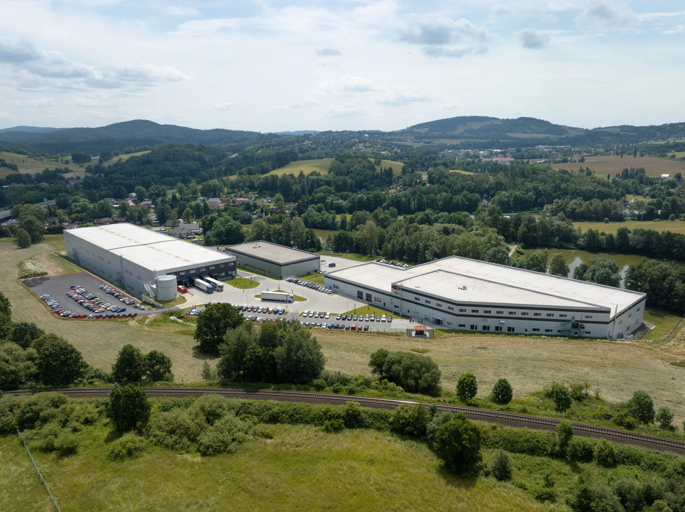
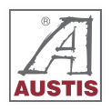
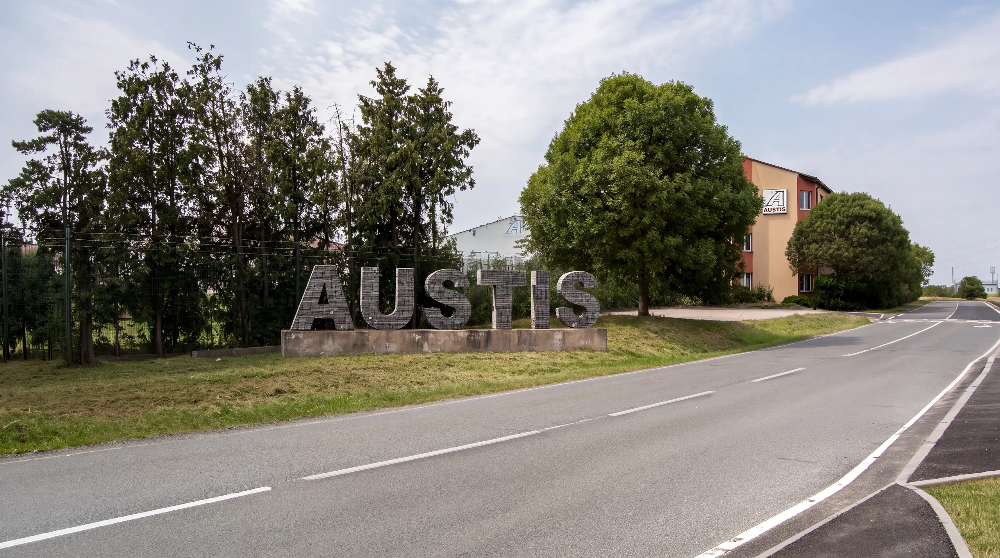

Investoři
Spolupracujeme s investory připravujícími stavební projekty většího rozsahu. Při přípravě zakázky vycházíme z jejich investičního záměru, projektových podkladů a požadovaného termínu.


Poptat spolupráciGenerální dodávky novostaveb a rekonstrukcí.
AUSTIS Pozemní stavby s.r.o. je součástí skupiny AUSTIS. Zaměřujeme se především na generální dodávky průmyslové, občanské a bytové výstavby na klíč. Našimi zákazníky jsou developeři, soukromí investoři, firmy i veřejní zadavatelé; spolupracujeme také s jejich pověřenými zástupci.
Naše zaměření zahrnuje novostavby a rekonstrukce. Konkrétní zkušenosti představujeme v přehledu vybraných realizací, kde uvádíme jednotlivé objekty a naši roli při jejich výstavbě nebo modernizaci.
Společnost AUSTIS a.s. byla založena v roce 1990. Její činnost zahrnuje stavební chemii, stavební činnost a správu nemovitostí. Stavebním zakázkám se věnuje od roku 1996.
S rozšířením těchto aktivit byly stavební a stavebně technické služby rozděleny mezi dceřiné společnosti AUSTIS Pozemní stavby s.r.o. a AUSTIS stavební s.r.o. AUSTIS Pozemní stavby se soustředí na generální dodávky stavebních projektů. AUSTIS stavební se specializuje na technický dozor stavebníka a koordinaci BOZP na staveništi.

Spolupracujeme s investory připravujícími stavební projekty většího rozsahu. Při přípravě zakázky vycházíme z jejich investičního záměru, projektových podkladů a požadovaného termínu.
Realizujeme rezidenční i komerční projekty. Při plánování zohledňujeme návaznost stavební dodávky na další části developerského záměru.
Stavíme provozní objekty a modernizujeme budovy a areály. U využívaných objektů je součástí přípravy také projednání provozních podmínek a případné etapizace.
Naše zaměření zahrnuje také generální dodávky výstavby pro veřejné zadavatele.
Přípravu a vedení zakázek zajišťuje náš tým. Pro jednotlivé profese spolupracujeme se stabilní sítí prověřených subdodavatelů. Jejich výběr a koordinace patří do řízení realizace, které podrobně představujeme na stránce služeb.
Rozšiřujeme tým o kolegy pro vedení staveb a výrobní přípravu. Hledáme lidi, kteří chtějí pracovat na konkrétních stavebních projektech a uplatnit své zkušenosti při jejich přípravě nebo realizaci.
Samostatné vedení staveb v roli generálního dodavatele a koordinace prací jednotlivých profesí.
Příprava zakázek, rozpočtů, harmonogramů a podkladů pro navazující realizaci.
Zajímá vás některá z pozic? Pošlete nám na info@austis.cz životopis nebo stručné představení a uveďte oblast svého zájmu. Domluvíme další kontakt a probereme náplň práce i podmínky spolupráce.
Napsat na info@austis.cz